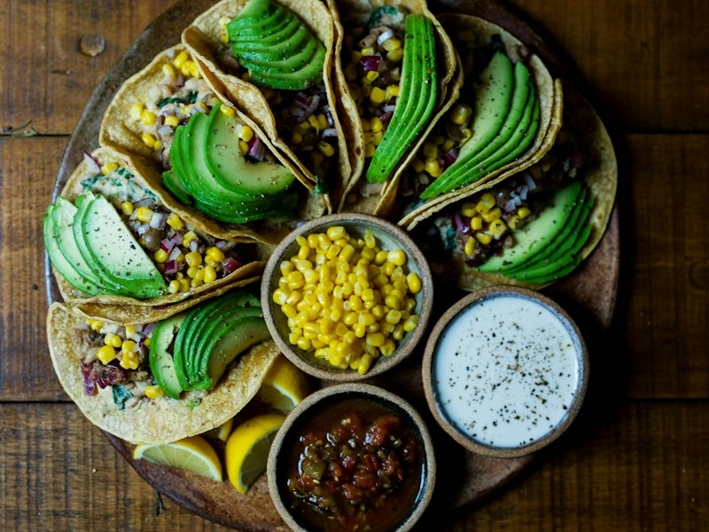
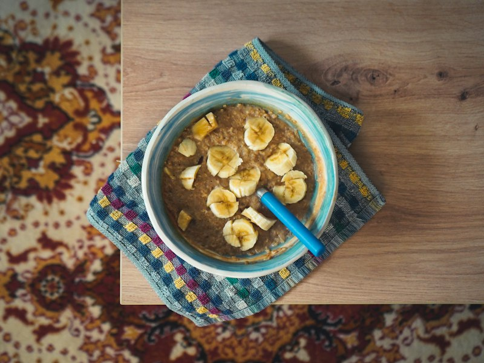
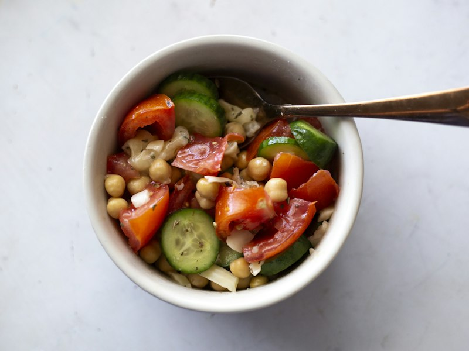

Tacos de frijol con aguacate
Comida · 15 minutos · 2 porciones
Una comida rápida para esos días con poco tiempo.
Ver receta: Tacos de frijol con aguacateRECETAS PARA TODOS LOS DÍAS
Comidas sencillas para disfrutar en casa, con ingredientes de todos los días.
Ver recetasLa Receta Secreta es un proyecto para compartir nuestras recetas favoritas.
Encuentra ideas para cocinar y descubre nuevas combinaciones de ingredientes.
Ideas sencillas para tu próxima comida.

Comida · 15 minutos · 2 porciones
Una comida rápida para esos días con poco tiempo.
Ver receta: Tacos de frijol con aguacate
Desayuno · 10 minutos · 1 porción
Un desayuno sencillo para empezar bien el día.
Ver receta: Avena con plátano
Comida · 12 minutos · 2 porciones
Fresca, fácil de llevar y sin encender la estufa.
Ver receta: Ensalada de garbanzoUna comida rápida para esos días con poco tiempo.
Comida · 15 minutos · 2 porciones
Un desayuno sencillo para empezar bien el día.
Desayuno · 10 minutos · 1 porción
Fresca, fácil de llevar y sin encender la estufa.
Comida · 12 minutos · 2 porciones